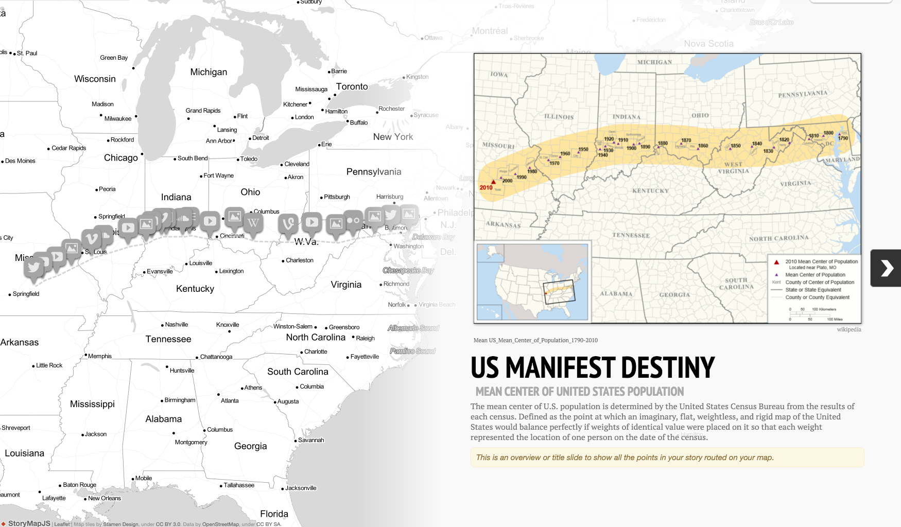

Storytelling Tools Timeline JS Easy-to-make, beautiful timelines.  StoryMap JS Maps that tell stories. Juxtapose JS Frame comparisons. Easy to make. Seamless to publish. SoundCite JS Inline audio players. Easy to make. Seamless to publish. Research and Report twXplorer A smarter way to search Twitter. City Hall Monitor Smart search for city documents. Teach Learn Digital journalism, bit by bit. Prototypes, experiments, and past projects Coming Up A mobile app, one stop shop for events coming up in your area. Composite A provocative project that shows the faces of individuals around a location based on publicly available photos. #Influence A tool that visualizes who influences the proliferation of hashtags. InstaTimeline A tool that automatically generates timelines from Instagram hashtags for events. Coming Up A mobile app, one stop shop for events coming up in your area. Composite A provocative project that shows the faces of individuals around a location based on publicly available photos. #Influence A tool that visualizes who influences the proliferation of hashtags. InstaTimeline A tool that automatically generates timelines from Instagram hashtags for events. Coming Up A mobile app, one stop shop for events coming up in your area. Composite A provocative project that shows the faces of individuals around a location based on publicly available photos. #Influence A tool that visualizes who influences the proliferation of hashtags. InstaTimeline A tool that automatically generates timelines from Instagram hashtags for events. Coming Up A mobile app, one stop shop for events coming up in your area. Composite A provocative project that shows the faces of individuals around a location based on publicly available photos. #Influence A tool that visualizes who influences the proliferation of hashtags. InstaTimeline A tool that automatically generates timelines from Instagram hashtags for events.